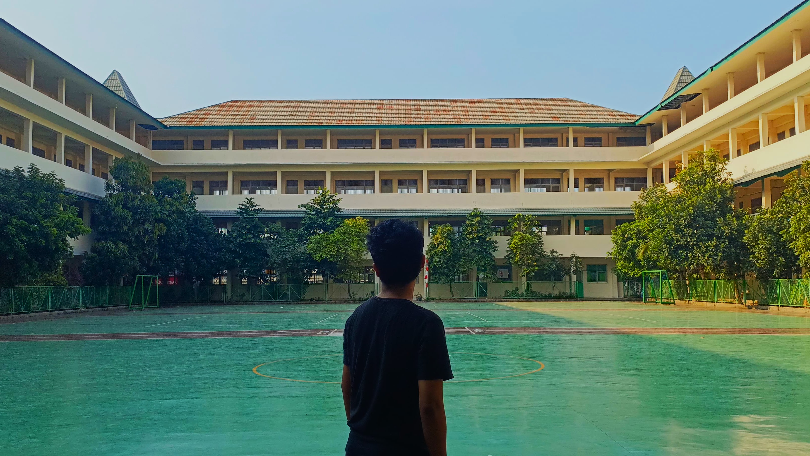

Yonathan Timotius Pranoto lahir di Bekasi pada 9 Mei 2008. Sejak kecil, ia tumbuh dalam lingkungan yang penuh dengan kasih sayang dan dukungan dari orang-orang di sekitarnya. Masa kecilnya diwarnai dengan berbagai pengalaman yang membentuk kepribadiannya hingga saat ini. Ia adalah anak yang ceria, penuh semangat, dan memiliki rasa ingin tahu yang tinggi. Sejak kecil, ia selalu menunjukkan ketertarikan untuk mencoba hal-hal baru dan belajar dari berbagai pengalaman. Ketika mulai memasuki dunia sekolah, Yonathan semakin menunjukkan keinginannya untuk berkembang. Ia tidak hanya sekadar belajar, tetapi juga aktif dalam berbagai kegiatan yang membantunya mengenal dunia lebih luas. Ia selalu memiliki keinginan untuk menjadi seseorang yang bisa membawa perubahan, baik bagi dirinya sendiri maupun bagi orang lain. Dari kecil, ia sudah terbiasa untuk bersosialisasi dengan banyak orang, menjalin hubungan baik, dan memahami berbagai karakter yang ada di sekitarnya. Saat memasuki masa remaja, ia bersekolah di SMK Mutiara Insan Nusantara yang berada di Kabupaten Tangerang. Di sekolah ini, ia semakin mengasah potensi yang dimilikinya. Ia mulai terlibat dalam berbagai organisasi dan kegiatan yang membantunya mengembangkan keterampilan kepemimpinan serta komunikasi. Yonathan bukanlah seseorang yang hanya mengikuti arus. Ia adalah seseorang yang berani berbicara, berani bertindak, dan berani memperjuangkan sesuatu yang ia yakini benar.
Salah satu hal yang menjadi perhatian utamanya di sekolah adalah bagaimana ia bisa membuat lingkungan sekolah menjadi lebih menarik dan tidak membosankan. Ia sadar bahwa banyak siswa merasa jenuh dengan kegiatan yang terlalu formal dan monoton. Karena itu, ia mulai merancang ide untuk mengadakan acara hiburan seperti konser atau pertunjukan band setiap hari Sabtu. Ia ingin menciptakan suasana yang lebih menyenangkan di sekolah dengan menghadirkan artis dari Yasmin agar siswa bisa menikmati hiburan yang positif. Selain itu, Yonathan juga memiliki kepedulian terhadap organisasi siswa di sekolahnya. Ia merasa bahwa OSIS masih belum cukup dekat dengan para siswa dan ingin mengubah stigma tersebut. Ia pun berinisiatif untuk mengadakan bulan evaluasi, sebuah program di mana para siswa bisa memberikan masukan secara anonim tentang kinerja OSIS. Ia berharap dengan adanya program ini, OSIS bisa lebih memahami kebutuhan siswa dan menjalankan program yang benar-benar bermanfaat bagi semua. Selain aktif di bidang organisasi dan kegiatan sekolah, Yonathan juga memiliki sisi spiritual yang kuat. Ia dipercaya untuk menjadi Ketua Rohani Kristen atau Rokris Yasmin. Dalam peran ini, ia berusaha untuk menciptakan komunitas yang lebih solid bagi teman-temannya yang ingin mendekatkan diri kepada Tuhan. Ia tidak hanya menjadi pemimpin, tetapi juga menjadi pendengar yang baik bagi mereka yang membutuhkan tempat untuk berbagi. Yonathan percaya bahwa peran seorang pemimpin bukan hanya memberi perintah, tetapi juga melayani dan memahami orang-orang di sekitarnya.
Yonathan memiliki impian besar yang ingin ia wujudkan di masa depan. Salah satu impiannya adalah menjadi student ambassador Banten. Ia ingin menjadi perwakilan siswa yang bisa membawa perubahan positif, tidak hanya di sekolahnya, tetapi juga di lingkup yang lebih luas. Ia ingin membuktikan bahwa usia bukanlah penghalang untuk membuat perubahan. Dengan semangat dan dedikasi yang tinggi, ia terus berusaha untuk menjadi versi terbaik dari dirinya sendiri dan memberikan dampak baik bagi orang-orang di sekitarnya. Dalam perjalanan hidupnya, Yonathan telah melewati berbagai pengalaman yang mengajarkannya banyak hal. Ia belajar bahwa untuk mencapai sesuatu, dibutuhkan kerja keras, kesabaran, dan keberanian untuk bermimpi. Ia percaya bahwa setiap langkah yang ia ambil adalah bagian dari perjalanan panjang yang akan membawanya menuju masa depan yang lebih cerah. Ia tidak ingin hanya menjadi penonton dalam hidupnya sendiri, tetapi ingin menjadi sosok yang berperan aktif dalam menciptakan perubahan. Yonathan adalah seseorang yang selalu berusaha untuk melakukan yang terbaik dalam setiap hal yang ia jalani. Ia tidak takut untuk menghadapi tantangan, karena ia percaya bahwa setiap rintangan yang datang adalah bagian dari proses pembelajaran. Ia memahami bahwa hidup adalah tentang bagaimana seseorang terus berkembang dan tidak berhenti untuk belajar. Oleh karena itu, ia selalu membuka dirinya terhadap peluang-peluang baru yang bisa membantunya tumbuh menjadi pribadi yang lebih baik. Di usianya yang masih muda, ia telah menunjukkan bahwa ia memiliki tekad yang kuat untuk mencapai sesuatu yang lebih besar. Dengan segala usaha dan dedikasi yang ia lakukan, ia berharap bisa menjadi inspirasi bagi orang lain. Ia ingin menunjukkan bahwa tidak ada yang tidak mungkin selama seseorang memiliki keberanian untuk bermimpi dan bekerja keras untuk mewujudkannya. Yonathan terus melangkah maju, membawa semangat dan harapan, serta siap menghadapi setiap tantangan yang ada di depannya dengan keyakinan dan optimisme.
Belajar seperti kamera yang hidup untuk mengabadikan sesuatu yang berharga buat seseorang
Baca lebih lanjut...